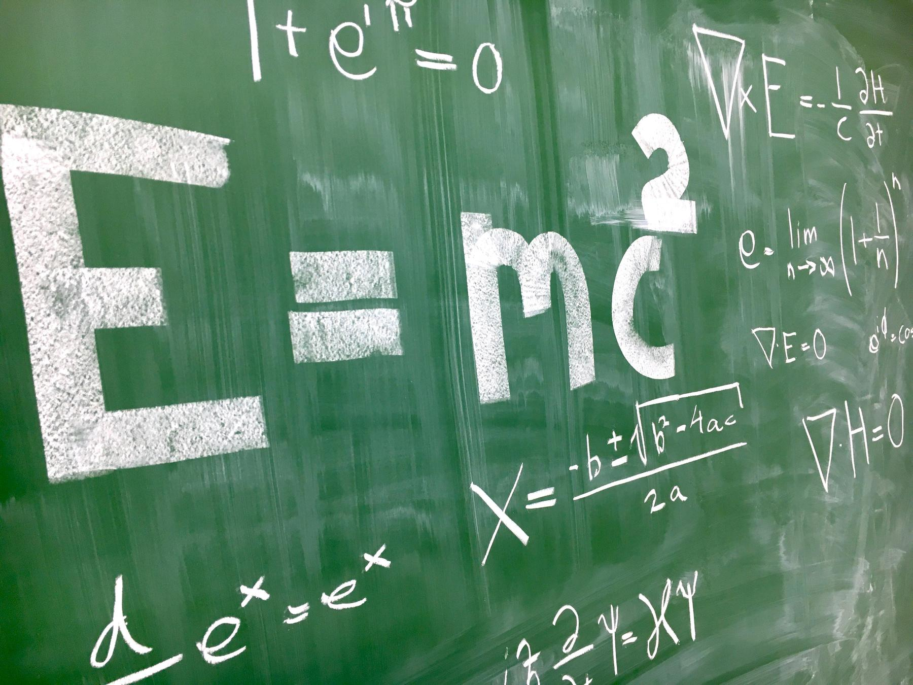
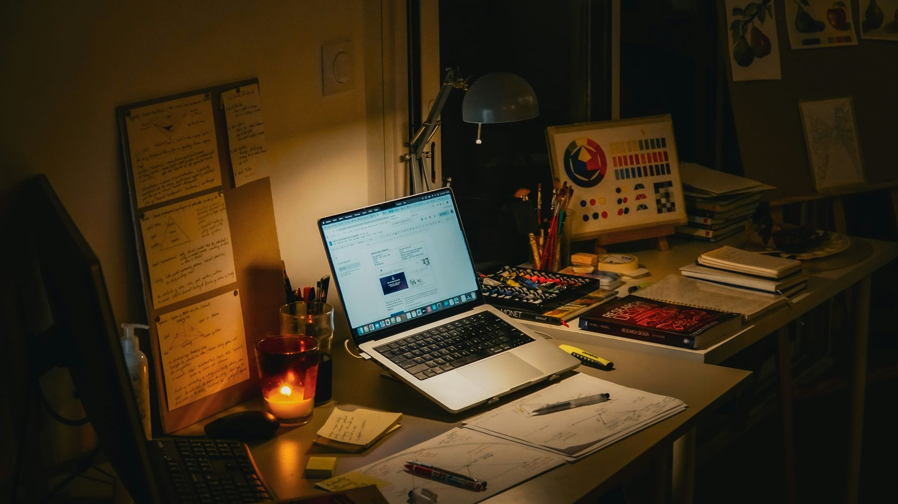

Coding Tutor
Step-by-step help that reads your code before it suggests anything.
Quillo is a patient AI tutor that explains, quizzes and remembers how you learn, so every study session picks up where the last one left off.


Photo · 02-tutors.jpgEach tutor is tuned to one subject and one way of teaching. Ask the same question five times and you get five fresh explanations, never a sigh.
Step-by-step help that reads your code before it suggests anything.
Connects every equation to something you can see, push or drop.
Shows you why a sentence works instead of rewriting it for you.
Works through problems one move at a time and lets you take the next step.
Snap a page and Quillo picks out definitions, formulas and the gaps you haven't filled yet. Drag the handle to compare.
After a few sessions Quillo knows whether you'd rather see a diagram, read a summary or talk it through, and it starts there.
Four steps, and you only have to remember the first one. Quillo keeps track of the rest: what's due, what's shaky, and what you've already nailed.
Use your teacher's code, or start a solo space for any subject.
Type, talk or snap a photo of the page you're stuck on.
Short quizzes check your understanding and loop back to the gaps.
Every session lands on your progress map, ready for tomorrow.
{{cur.text}}

Photo · 07-cta.jpgJoin a classroom or start on your own. It takes about a minute.